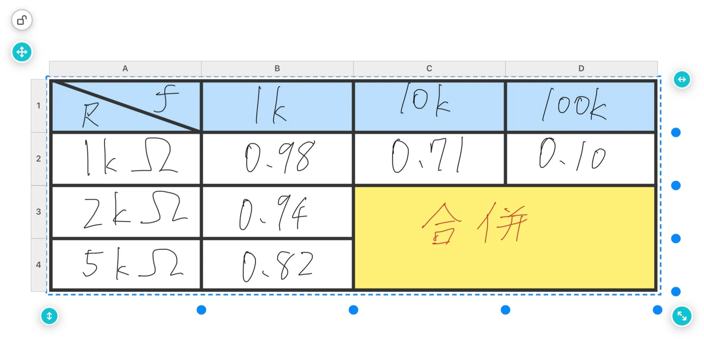

PaperNote
PaperNote是給iPad的手寫筆記App，希望可以幫助受到電路荼毒的各位(?
我私心喜歡圖片懸浮功能跟頁面擴展功能，真的是實用到不行:P

- 沒有廣告畫面裡只有你的筆記
- 沒有追蹤不收集使用紀錄
- 不用註冊打開就能開始寫
- 開放原始碼GPL-3.0，程式碼公開
因為不想做備審而開始的小專案
PaperNote 是一個大學生用愛發電的小專案。意外的受到不少人支持(?
開發了很多我很喜歡的功能，目前也成為我主力的筆記App了2ㄏ
如果你也喜歡這個專案，並且想贊助運營成本
歡迎通過ko-fi斗內!
寫起來順手，改起來也順手
從細字筆記到大片螢光標記，常用的筆都放在手邊。

七種筆型
鋼筆、原子筆、毛筆／沾水筆、鉛筆、螢光筆、蠟筆、水彩，顏色、粗細和虛線都能調整。
常用筆刷
把常用的顏色和粗細存起來，自己排順序，工具列和調色盤都會套用。
停一下就變工整
畫線或圖形時停住，自動修成直線、圓、三角形或四邊形。
整筆或局部擦除
只擦掉碰到的那一段也可以，擦完能自動切回原本的筆。
套索
一次圈起筆跡、圖片、表格、電路和文字框，一起移動、拷貝或刪除。
手掌防誤觸
可以選左手或右手寫字，也能關閉手指書寫，讓手指只負責捲動。
講義不只拿來看
匯入課本和講義，直接在原文上劃重點、查詢、翻譯。
對齊文字的螢光筆
自動對齊 PDF 的文字，劃出來的重點整整齊齊。
選字就能翻譯
使用 iPadOS 內建的翻譯，也可以拷貝或查詢選取的文字。
掃描檔也能選字
沒有文字層的頁面，直接在 iPad 上辨識中文、英文和日文。
空白不夠就擴展
任一頁都能往上下左右長出空白，原本的內容和筆跡留在原位。
大綱
看 PDF 原本的目錄，也能把任何一頁加進自己的大綱。
批次匯入
一個 zip 裡的多份 PDF 一次匯入，資料夾結構照樣保留。
用畫的，做出整齊的表格
插入現成的表格，或拿起筆直接畫一個。

畫線就能分割
在表格裡畫一條線切開格子，也能畫斜線，或在旁邊加出新的列和欄。
擦線就能合併
沿著格線擦過去，兩邊的格子就合併。
排版一次完成
平均分配欄寬和列高，鎖定尺寸，調整底色與格線樣式。
重複選取範圍
同樣格式要好幾組時，拖一下就複製並接成一個大表格。
為電機、電子的筆記而做
67 種內建元件，導線照著你畫的路線自動排成直角。

會自己接好的導線
吸附接腳和格點；接在一起的地方自動打點，只是交叉的畫成跨線。
名稱與上下標
輸入 R_1、x^2 就會顯示成上下標，也能自動編號。
自己畫元件
用線條或筆刷畫出符號、標上接腳，用起來和內建元件一樣。
自訂電路
把常畫的電流鏡、放大級存進元件庫，下次直接拉出來。
旋轉、翻轉、整段調整
元件和導線放下去之後都還能改。
匯出
輸出 SVG 或網表（netlist），放進報告或拿去做進一步分析。
元件庫裡有什麼
- 被動元件
- 電阻、電容、電感、可變電阻、電位器、保險絲、變壓器
- 二極體
- 一般、蕭特基、齊納、穿隧、LED、光二極體、變容
- 電晶體
- NMOS、PMOS（含 4 端）、NPN、PNP、JFET、IGBT
- 放大器
- 運算放大器、全差動、OTA
- 邏輯閘
- AND、OR、NAND、NOR、XOR、XNOR、NOT、Buffer
- 數位方塊
- D 正反器、D 閂鎖、多工器、編碼器、解碼器、ALU
- 訊號源
- 電壓源、電流源、電池、弦波、方波、受控源
- 接地與電源
- 接地、信號接地、機殼接地、VDD、VSS
- 開關與儀表
- 開關、按鈕、SPDT、電壓表、電流表、歐姆表、燈泡
- 其他
- ADC、DAC、混頻器、天線，以及你自己畫的元件
需要的那一塊，帶著走
把題目、公式或圖表留在眼前，翻到哪一頁都看得到。
矩形或自由形狀截圖
拷貝、存到照片，或直接翻譯圖裡的文字。
釘選在畫面上
截圖浮在最上層，可以所有分頁都顯示，或只留在這本筆記本。
自製貼紙
圖片自動去背；用筆跡做的貼紙貼上後仍然可以改顏色、擦除。
文字框與便利貼
內建霞鶩文楷、芫荽、思源宋體三套中文字體。
一學期的筆記，也找得到
每門課一個資料夾，常用的筆記同時開著。
分頁與群組
多本筆記同時開啟，依課程組成群組。
我的最愛
收藏常用文件或某一頁，頁面還能附上一句備註。
搜尋與排序
用名稱搜尋筆記本，依名稱、修改日期或建立日期排序。
四種紙張
空白、橫線、方格、點格，A4、B5、Letter，直式或橫式。
30 天垃圾桶
刪掉的筆記本、資料夾和頁面都能在 30 天內還原。
自由匯出
選頁輸出成 PDF，或輸出仍可編輯的 PaperNote 檔。
Apple Pencil 的手勢
- 點兩下筆身
- 在筆和橡皮擦之間切換，也可以同時叫出調色盤圖示。
- 按壓 Pencil Pro
- 打開調色盤，或在設定裡改成切換到你指定的工具。
- 畫線時停住
- 修成直線或圖形，放開之前還能調整。
- 編輯表格時點兩下
- 在畫格線和擦格線之間切換。
你的筆記，留在你手上
筆記存在你的 iPad。想要備份時，才連結你自己的 Google Drive。
為什麼需要 Google Drive 權限
備份是選用功能。連結之後，PaperNote 只要求 drive.file 權限，用途只有兩個：把筆記備份到你 Google Drive 裡的「PaperNoteBackup」資料夾，以及在你要求時從那裡還原。
看不到其他檔案
只能存取 App 自己建立的檔案。
不經過開發者
資料直接在 iPad 和你的 Google Drive 之間傳輸。
自動、只傳有變動的
每 10 分鐘和關閉筆記本後備份，也可以關掉自動備份。
還原後還能編輯
備份的是原始檔，筆跡、表格和標示都能繼續改。
系統需求
- 裝置
- iPad
- 系統
- iPadOS 18 以上
- 介面語言
- 繁體中文、English
- Apple Pencil
- 建議使用，也可以用手指書寫
- 網路
- 寫筆記不需要；備份和下載翻譯語言時需要
- 授權
- GPL-3.0
電路圖、手寫與表格的圖片取自 App 實際畫面；其餘插圖為功能示意。